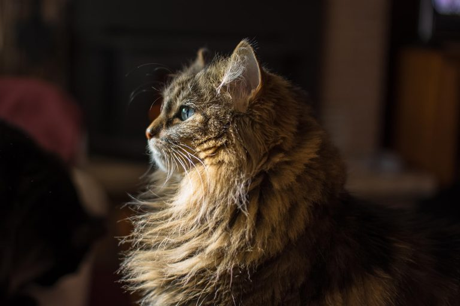

Здесь будут интересные факты о котах
- В среднем, коты спят по 16-18 часов в день, что составляет более 70% кошачьей жизни.
- Кошки не чувствуют вкуса сладкого.
- У владельцев котов риск инсульта и сердечного приступа уменьшается в среднем на треть.

- Самая богатая кошка в мире владеет состоянием в 13 миллионов долларов.
Эти деньги оставил ей в наследство умерший владелец.
- Коты могут издавать более чем 100 различных звуков,
тогда как собаки — всего лишь около 10.
- Нос котов имеет уникальный узор, как отпечаток человеческих пальцев.